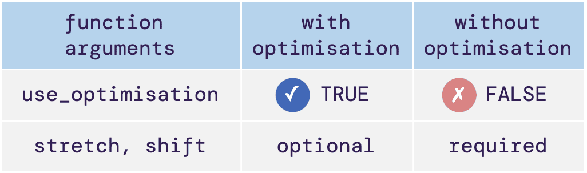

Registering data without optimisation
Source:vignettes/register-data-manually.Rmd
register-data-manually.RmdThis article will show users how to register data using some specified shift and stretch parameters. This demo will use one of the genes from the sample data provided by the package.
Load sample data
greatR provides an example of data frame containing two
different species A. thaliana and B. rapa with two and
three different replicates, respectively. This data frame can be read as
follows:
# Load the package
library(greatR)
library(data.table)
# Load a data frame from the sample data
b_rapa_data <- system.file("extdata/brapa_arabidopsis_data.csv", package = "greatR") |>
data.table::fread()Registering without optimisation
The illustrative table below shows the major differences between
runing register() with and without optimisation.

Here, we will only use a single gene with
gene_id = "BRAA03G023790.3C" from the sample data, but this
feature can also be used when registering multiple genes.
gene_BRAA03G023790.3C_data <- b_rapa_data[gene_id == "BRAA03G023790.3C"]Before registering, we can use the helper function
get_approximate_stretch() to approximate the stretch factor
between our sample datasets.
get_approximate_stretch(
gene_BRAA03G023790.3C_data,
reference = "Ro18",
query = "Col0"
)
#> [1] 2.666667We can now use the estimated stretch calculated above in the
registration process below. Users need to set
use_optimisation = FALSE to disable the automated
optimisation process.
registration_results <- register(
gene_BRAA03G023790.3C_data,
reference = "Ro18",
query = "Col0",
scaling_method = "z-score",
stretches = 2.25,
shifts = -4.36,
use_optimisation = FALSE
)
#> ── Validating input data ───────────────────────────────────────────────────────
#> ℹ Will process 1 gene.
#> ℹ Using estimated standard deviation, as no `exp_sd` was provided.
#> ℹ Using `scaling_method` = "z-score".
#>
#> ── Starting manual registration ────────────────────────────────────────────────
#> ℹ Using `overlapping_percent` = 50% as a registration criterion.
#> ✔ Applying registration for genes (1/1) [38ms]To check whether the gene is registered or not, we can get the
summary results by accessing the model_comparison table
from the registration result.
registration_results$model_comparison |>
knitr::kable()| gene_id | stretch | shift | BIC_diff | registered |
|---|---|---|---|---|
| BRAA03G023790.3C | 2.25 | -4.36 | -7.849037 | TRUE |
As we can see, using the given stretch and shift parameter above, the B. rapa gene BRAA03G023790.3C can be registered.
Registering multiple gene with different pre-defined registration parameters
Users can also specify a list of parameters rather than a single
value. Similar to the registration process above, users need to set
use_optimisation = FALSE to disable the automated
optimisation process.
registration_results <- register(
gene_BRAA03G023790.3C_data,
reference = "Ro18",
query = "Col0",
scaling_method = "z-score",
stretches = seq(1, 3, 0.1),
shifts = seq(0, 4, 0.1),
use_optimisation = FALSE
)
#> ── Validating input data ───────────────────────────────────────────────────────
#> ℹ Will process 1 gene.
#> ℹ Using estimated standard deviation, as no `exp_sd` was provided.
#> ℹ Using `scaling_method` = "z-score".
#>
#> ── Starting manual registration ────────────────────────────────────────────────
#> ℹ Using `overlapping_percent` = 50% as a registration criterion.
#> ✔ Applying registration for genes (1/1) [1.3s]